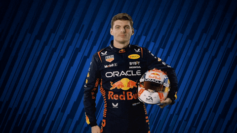

Welcome to Max's Portfolio
Story, records and achievements of the Formula 1 World Champion.
World Champion
2021, 2022, 2023 and 2024 consecutive titles with Red Bull Racing.
Grand Prix Wins
Over 65 race victories and counting.
Youngest Winner
First win at the age of 18 in Spain 2016.
Some Records
- Most wins in a single season (2023)
- Most consecutive race wins
- Youngest driver to score points in F1

Max Verstappen: A Chronicle of a Formula 1 Phenomenon
Verstappen, son of former F1 driver Jos Verstappen, was
destined for racing, beginning
his karting career at age four. He demonstrated prodigious talent, winning numerous championships before
moving
to single-seaters. He spent just one year in Formula 3 before making his audacious leap into Formula
1.
In 2015, he shattered records by debuting for Scuderia Toro Rosso at just 17
years
old, becoming the youngest
driver in the sport's history. His aggressive driving style and raw speed quickly turned heads. A
sensational
mid-season promotion to the senior Red Bull Racing team in 2016 saw him win his very first race for the
squad
at
the Spanish Grand Prix, another record for the youngest-ever race winner.
After several years of honing his craft and securing consistent victories,
Verstappen emerged as a
formidable title contender. In 2021, he engaged in a fierce, season-long battle with seven-time champion
Lewis
Hamilton. The rivalry was one of the most intense in F1 history, culminating in a dramatic and controversial
final-lap overtake at the Abu Dhabi Grand Prix, where Verstappen secured his maiden World
Championship.
This victory marked the beginning of a new era of dominance. With Red Bull
Racing
mastering the new technical
regulations, Verstappen went on to win consecutive championships in the following years with commanding
performances. He has since broken numerous records, including the most wins in a single season, cementing
his
legacy as one of the all-time greats of Formula 1.